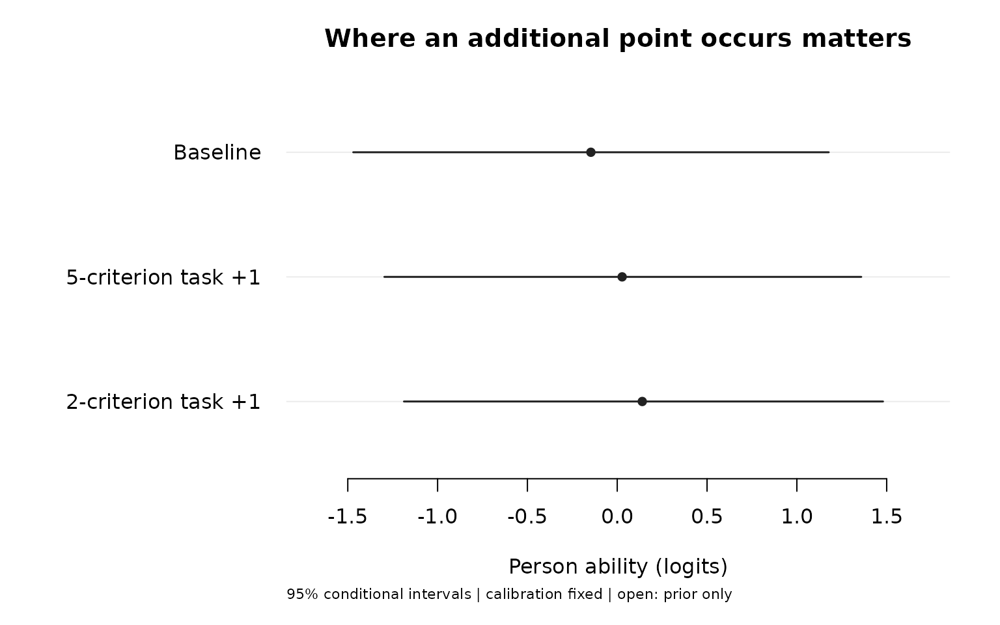

Tasks, rubric criteria and testlet dependence
Source:vignettes/mfrmr-testlet-applications.Rmd
mfrmr-testlet-applications.RmdShould an assessment add another task or another criterion to the same task? What changes when one task has five criteria and another has two? A testlet model makes the sharing of evidence explicit: several scores from one performance can reflect the same Person-by-task effect as well as general ability. More scores need not provide proportionally more independent evidence.
In a language assessment, the criteria might concern fluency, accuracy, coherence, range and pronunciation. In music they might concern timing, intonation and expression; in a clinical assessment, several indicators can refer to the same station. These substantive dimensions are not automatically interchangeable or manifestations of one ability. Choose the measurement purpose and grouping before fitting. The testlet workflow explains membership, calibration, scoring and saved results. Its simulation comparison also shows why planning precision and actual scoring accuracy must be distinguished: accounting for dependence improved interval coverage, but increased point-score error in two balanced conditions. The planning calculations below hold calibration fixed and do not propagate uncertainty in estimated ability or local variance.
| Decision | What the current model can contribute | What it does not establish |
|---|---|---|
| Add tasks or criteria | Compare conditional precision under specified candidate assignments and a fixed fitted model. | A universal advantage of tasks, an optimal cost allocation or frequentist interval coverage. |
| Review possible halo | Describe residual dependence within the declared rating episode and compare its consequences. | The cause of dependence, criterion separability or a diagnosis of rater error. |
| Compare task-specific dependence | Estimate one common local variance across all tasks. | Separate variances or a ranking of tasks by dependence. |
| Handle unequal numbers of criteria | Integrate the shared effect for all rows in each block. | Equal task weights, removal of every bias or a correction for informative assignment. |
A reproducible assessment with parallel criteria
To isolate grouping, this example deliberately gives five hypothetical criteria identical response functions, categories 0–2 and equal row weights. It does not assume that real fluency and accuracy criteria have identical difficulty or measure the same construct. In an applied fit, include defensible fixed facets and review their response functions. The small enumeration later in this article is specific to these parallel criteria, not a general planner.
Eighty Persons each complete three tasks. Scores share an additional effect within each Person/task. The simulation creates new assigned scores; it does not duplicate observed scores or fill unassigned combinations.
set.seed(92327001)
ratings <- expand.grid(
Criterion = paste0("C", 1:5), Task = paste0("T", 1:3),
Person = sprintf("P%03d", 1:80), stringsAsFactors = FALSE
)
ability <- rnorm(80)
local_effect <- matrix(rnorm(80 * 3, sd = sqrt(.8)), 80, 3)
p <- match(ratings$Person, sprintf("P%03d", 1:80))
t <- match(ratings$Task, paste0("T", 1:3))
eta <- ability[p] + local_effect[cbind(p, t)]
w <- exp(cbind(0, eta + .6, 2 * eta))
probability <- w / rowSums(w)
u <- runif(nrow(ratings))
ratings$Score <- as.integer(u > probability[, 1]) +
as.integer(u > rowSums(probability[, 1:2]))Fit the common-variance testlet model and its locally independent
submodel. testlet_variance = 0 gives the ordinary RSM
without local effects through this same API. Both fits estimate normal
ability variance. They need not estimate identical ability distributions
or category steps.
testlet_fit <- fit_mfrm_testlet(
ratings, "Person", "Score", "Task", score_levels = 0:2,
quad_points = 61
)
independent_fit <- fit_mfrm_testlet(
ratings, "Person", "Score", "Task", score_levels = 0:2,
testlet_variance = 0, quad_points = 121
)
for (fit in list(testlet_fit, independent_fit)) {
stopifnot(fit$checks$NumericalReady, fit$checks$InformationPositive)
}
data.frame(
Model = c("Testlet", "Independent"),
AbilityVariance = c(testlet_fit$calibration$person_variance,
independent_fit$calibration$person_variance),
LocalVariance = c(testlet_fit$calibration$variance, 0)
)
#> Model AbilityVariance LocalVariance
#> 1 Testlet 1.334107 0.6950509
#> 2 Independent 1.078343 0.0000000The independent fit requires the higher order for this example: its 61-point calculation does not pass the numerical checks. An optimizer convergence code alone is insufficient. No quadrature order is universally adequate. An estimated variance at zero is also different from fixing it to zero in advance.
Use a fixed rating budget to compare task allocation
Each candidate plan has four ratings: one task with four parallel
criteria, two tasks with two criteria each, or four tasks with one
criterion each. All 81 possible score patterns are scored using
predict(). Their probabilities under the corresponding
fitted model provide the averaging weights. This avoids selecting a few
convenient observed response patterns to represent future assessments.
The one-task plan uses the already fitted multi-task calibration; it
cannot separately estimate ability and local variances from one-task
data alone.
The mean conditional posterior variance is . Its square root is the root mean posterior variance, in logits. A smaller value means greater average precision under the stated model. Also report , the model-implied marginal EAP reliability. By total variance it equals . This population definition is related to Wang and Wilson’s (2005) EAP reliability in Equation 35, p. 145. It is neither a G/Phi coefficient nor a 95% coverage result.
Calibration is treated as known at its fitted value. The calculation assumes independent normal task effects, assignment independent of ability and complete observed scores. It excludes uncertainty in estimated steps and variances, content coverage, task setup time and the possibility of informative missingness. Compare allocations within a model; comparing the two models’ own reliability numbers is not a recovery study or evidence that one model is more accurate.
The short calculation functions are shown in the appendix. They are example code, not a new exported design-optimization API.
plans <- list(
"1 task x 4 criteria" = rep("T1", 4),
"2 tasks x 2 criteria" = rep(c("T1", "T2"), each = 2),
"4 tasks x 1 criterion" = paste0("T", 1:4)
)
fits <- list(Testlet = testlet_fit, Independent = independent_fit)
plan_results <- list()
for (model in names(fits)) for (plan in names(plans)) {
key <- paste(model, plan, sep = ": ")
plan_results[[key]] <- evaluate_parallel_plan(fits[[model]], plans[[plan]])
plan_results[[key]]$summary$Model <- model
plan_results[[key]]$summary$Plan <- plan
}
plan_summary <- do.call(rbind, lapply(plan_results, `[[`, "summary"))
rownames(plan_summary) <- NULL
knitr::kable(plan_summary[c("Model", "Plan", "RMSPosteriorSD",
"ModelImpliedEAPReliability")], digits = 3)| Model | Plan | RMSPosteriorSD | ModelImpliedEAPReliability |
|---|---|---|---|
| Testlet | 1 task x 4 criteria | 0.834 | 0.479 |
| Testlet | 2 tasks x 2 criteria | 0.773 | 0.552 |
| Testlet | 4 tasks x 1 criterion | 0.732 | 0.598 |
| Independent | 1 task x 4 criteria | 0.621 | 0.642 |
| Independent | 2 tasks x 2 criteria | 0.621 | 0.642 |
| Independent | 4 tasks x 1 criterion | 0.621 | 0.642 |
In this example the testlet-model reliability increases from about .479 to .552 and .598 as the same four ratings are spread across independent tasks; root mean posterior variance falls from .834 to .773 and .732 logits. The independent submodel gives the same value across all three allocations because the four response functions are held identical and it ignores task membership. Ordinary MFRM does not generally assign identical information to arbitrary added criteria or tasks: difficulty, targeting and response functions matter. If the local variance is zero, grouping alone provides no gain in this comparison.
These results support a conditional planning comparison, not a rule to always add tasks. A new criterion can add essential content that these parallel indicators intentionally omit. A practical decision needs comparable content, plausible difficulty, task costs and several plausible dependence assumptions. A longer assessment is not qualified by extrapolating these four-rating numbers.
Unequal blocks: five criteria versus two
Consider a new Person with score 1 on all seven criteria. Compare two hypothetical changes: increase one score in the five-criterion task, or increase one in the two-criterion task. Both changes add exactly one raw-score point. We rescore the complete seven-row roster for each profile; we do not append responses to a cached score or duplicate any evidence.
base <- data.frame(
Task = c(rep("T1", 5), rep("T2", 2)), Score = rep(1L, 7),
Criterion = c(paste0("C", 1:5), paste0("C", 1:2))
)
dense <- sparse <- base
dense$Score[1] <- 2L
sparse$Score[6] <- 2L
profiles <- rbind(
transform(base, Person = "Baseline"),
transform(dense, Person = "5-criterion task +1"),
transform(sparse, Person = "2-criterion task +1")
)
unequal_scores <- lapply(fits, predict, newdata = profiles, quad_points = 61)
changes <- do.call(rbind, lapply(names(unequal_scores), function(model) {
tab <- unequal_scores[[model]]$table
stopifnot(all(tab$Status == "available_conditional"))
data.frame(Model = model, Profile = tab$Person, Estimate = tab$Estimate,
ChangeFromBaseline = tab$Estimate - tab$Estimate[tab$Person == "Baseline"])
}))
knitr::kable(changes, digits = 3)| Model | Profile | Estimate | ChangeFromBaseline |
|---|---|---|---|
| Testlet | 2-criterion task +1 | 0.139 | 0.286 |
| Testlet | 5-criterion task +1 | 0.027 | 0.174 |
| Testlet | Baseline | -0.147 | 0.000 |
| Independent | 2-criterion task +1 | 0.069 | 0.219 |
| Independent | 5-criterion task +1 | 0.069 | 0.219 |
| Independent | Baseline | -0.149 | 0.000 |
Here the testlet-model EAP changes by about .174 logits for the additional point in the larger block and .286 in the smaller one. The independent submodel changes by .219 in either position. These are response-profile sensitivities, not estimates of task weights or errors against known ability. They illustrate how shared evidence can reduce the marginal influence of a rating from an already well-observed block. They do not prove equal task weighting or removal of bias. Real differences in task difficulty or rubric content need to be modeled and examined rather than attributed to row count.
plot(unequal_scores$Testlet, sort = "estimate", palette = "mono",
title = "Where an additional point occurs matters",
reference = NULL)
The figure uses the existing scoring-result method;
plot_data() and as_ggplot() retain the table
and interpretation. Suppress a title or caption with
show_title = FALSE or show_notes = FALSE for a
publication, while retaining the saved metadata. Interval overlap is not
a test of differences between these hypothetical profiles.
If an assessment policy requires equal task weights, specify that policy and the score to which it applies. Do not assume that a testlet likelihood enforces it, multiply by inverse block size without changing the statistical model, or duplicate short blocks. The current testlet API uses unit row weights. Observed-score composites and G/D studies are separate planning routes; their weights and reliability coefficients do not become latent-MFRM quantities.
Does a large local variance diagnose halo?
It identifies dependence represented by the model’s chosen group. It
does not identify its cause. With testlet = "Task", genuine
Person-by-task performance, omitted content dimensions, a shared
stimulus and rater processes can lead to similar dependence. A large
variance cannot by itself show that fluency and accuracy are
indistinguishable or that a rater ignored the rubric. The current model
has one substantive ability, not separate latent abilities for each
criterion, and has no validated halo cutoff.
For a rubric review, inspect concrete responses, independent ratings and the assessment process. A prespecified group such as a Task-by-rater episode answers a different question from a task shared across raters. Creating that episode label does not simultaneously fit both dependence sources: this API allows one non-overlapping membership, not crossed task and rater local effects. If task performance and rater impression are confounded by the assignment, changing the label does not disentangle them.
A training or rubric-revision comparison should retain comparable tasks, assignment and populations, with an appropriate independent or planned before/after design. A decrease in a fitted variance alone is not causal evidence of training success. The current output can motivate a review; it does not recommend merging criteria or excluding a rater automatically.
Can each task have its own dependence variance?
Not in the current API: testlet_variance = NULL
estimates one common variance and a supplied numeric value fixes that
same variance for all blocks. Changing task labels or adding a fixed
Task facet does not produce separate variances. The fixed facet
describes average difficulty, a different target. Wang and Wilson
(2005), Table 6, present a model allowing different testlet variances;
that specification is broader than this implementation.
Do not fit each task separately to recover a local variance. With one task per Person and no other information, normal ability and the normal local effect enter as their sum: their variances cannot be separately identified. The fitting guard requires multiple observed testlets for some Persons. A future task-specific extension needs a joint model, linked multi-task data, variance-boundary handling and validation of uncertainty and comparisons. Even then, a larger task variance is a review signal, not a reason to replace valuable content automatically. Residual summaries grouped by Task may help describe patterns today, but are not estimates of task-specific local variance.
Save the actual inputs, assumptions and scores
archive <- list(fits = fits, plans = plans, plan_results = plan_results,
profiles = profiles, unequal_scores = unequal_scores)
path <- tempfile("testlet-planning-", fileext = ".rds")
saveRDS(archive, path)
restored <- readRDS(path)
stopifnot(identical(restored$unequal_scores$Testlet$table,
unequal_scores$Testlet$table))For a standard report, attach a matching scoring result with
mfrm_results(testlet_fit, predictions = unequal_scores$Testlet),
then use mfrm_report() or
export_mfrm_results(). The separate
plan_summary is a model-conditional calculation from this
article; it is not automatically interpreted as a G/D-study or certified
design recommendation by the report.
Appendix: complete four-rating calculation
The code below enumerates every response pattern, integrates its
probability under the fitted RSM, and uses public predict()
results for posterior moments. The normal rule is constructed with base
R; no new package is required. Comparing quadrature orders and checking
total probability and total variance catch numerical inconsistencies.
They do not establish that the model describes an actual assessment. No
unavailable pattern is dropped. Run these definitions before the
plan-comparison chunk when copying code into an R script.
normal_rule <- function(n) {
jacobi <- matrix(0, n, n)
jacobi[cbind(1:(n - 1), 2:n)] <- sqrt(1:(n - 1))
e <- eigen(jacobi + t(jacobi), symmetric = TRUE)
list(nodes = e$values, weights = e$vectors[1, ]^2)
}
pattern_mass <- function(fit, membership, patterns, order) {
rule <- normal_rule(order)
theta <- fit$calibration$person_sd * rule$nodes
gamma <- sqrt(fit$calibration$variance) * rule$nodes
answer <- numeric(nrow(patterns))
for (h in seq_along(theta)) {
logw <- outer(theta[h] + gamma, 0:2) -
matrix(c(0, cumsum(fit$calibration$steps)), order, 3, byrow = TRUE)
prob <- exp(logw - apply(logw, 1, max))
prob <- prob / rowSums(prob)
conditional <- rep(1, nrow(patterns))
for (block in split(seq_along(membership), membership)) {
block_prob <- matrix(1, order, nrow(patterns))
for (j in block) {
block_prob <- block_prob * prob[, patterns[, j] + 1L, drop = FALSE]
}
conditional <- conditional * as.vector(crossprod(rule$weights, block_prob))
}
answer <- answer + rule$weights[h] * conditional
}
answer
}
evaluate_parallel_plan <- function(fit, membership) {
stopifnot(inherits(fit, "mfrm_testlet"),
length(fit$input$columns$facets) == 0L,
identical(as.numeric(fit$input$score_levels), 0:2 + 0),
length(membership) == 4L, !anyNA(membership))
patterns <- as.matrix(expand.grid(rep(list(0:2), 4)))
data <- data.frame(Person = rep(sprintf("Y%02d", 1:81), each = 4),
Task = rep(membership, 81), Score = as.vector(t(patterns)))
scores <- predict(fit, data, quad_points = 61)
stopifnot(identical(scores$table$Person, sprintf("Y%02d", 1:81)),
all(scores$table$Status == "available_conditional"))
low <- pattern_mass(fit, membership, patterns, 61)
probability <- pattern_mass(fit, membership, patterns, 121)
tab <- scores$table
v <- fit$calibration$person_variance
expected_variance <- sum(probability * tab$ConditionalSD^2)
stopifnot(abs(sum(probability) - 1) < 1e-8,
max(abs(low - probability)) < 1e-8,
abs(sum(probability * tab$Estimate)) < 1e-7,
abs(sum(probability * (tab$ConditionalSD^2 + tab$Estimate^2)) - v) < 1e-7)
list(scores = scores, probability = probability, patterns = patterns,
membership = membership, summary = data.frame(
RMSPosteriorSD = sqrt(expected_variance),
ModelImpliedEAPReliability = 1 - expected_variance / v))
}References
Wang, W.-C., & Wilson, M. (2005). The Rasch testlet model. Applied Psychological Measurement, 29, 126–149. doi:10.1177/0146621604271053. See the RSM specification (p. 129), task-specific variances (p. 142) and EAP reliability and interpretation (p. 145).
Wang, W.-C., & Wilson, M. (2005). Exploring local item dependence using a random-effects facet model. Applied Psychological Measurement, 29, 296–318. doi:10.1177/0146621605276281. See the distinction between fixed rater severity and Person-by-rater local effects (pp. 299–300) and the need to investigate causes (pp. 314–316).